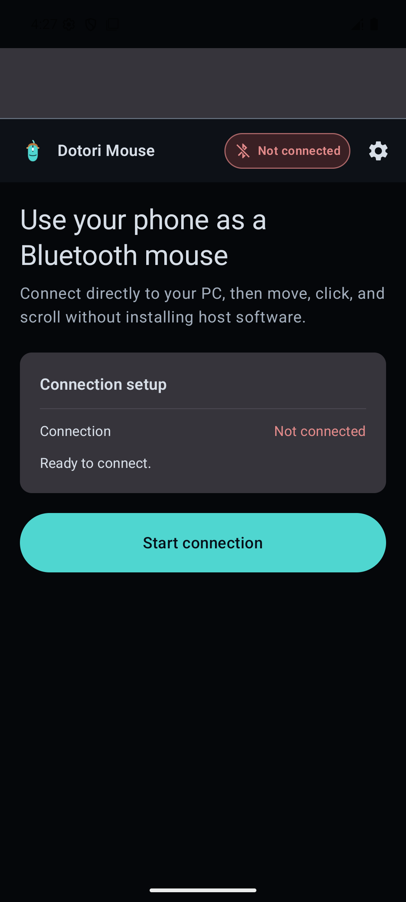
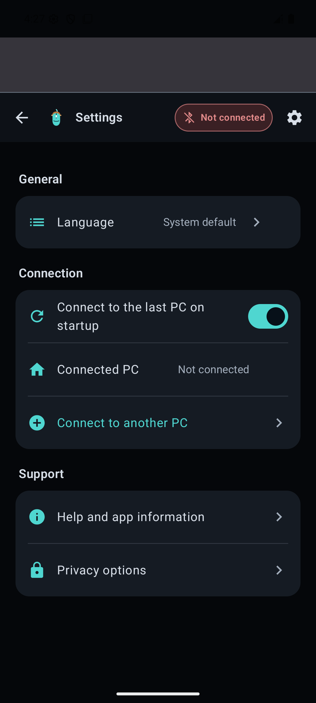
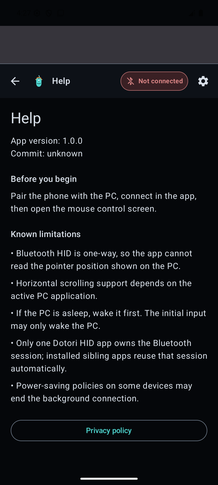
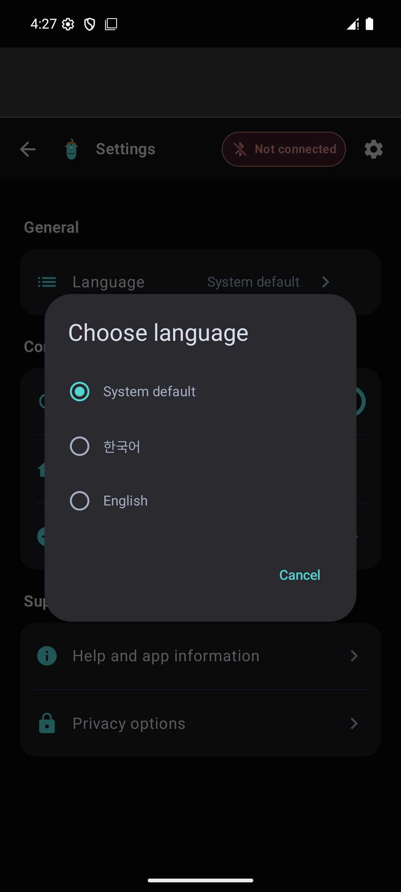

Short answer. Pair the phone as a standard Bluetooth HID mouse. A drag on the phone becomes relative X/Y movement, taps become mouse button reports, and dedicated rails become wheel or ordered Shift+wheel input. The PC needs no companion program, but the phone must support the Bluetooth HID Device profile.
Dotori Bluetooth MouseProvides a large trackpad, left/middle/right buttons, sensitivity control, natural scrolling, and separate scroll rails.
A Bluetooth mouse reports movement, not position
A conventional HID mouse does not say “move the pointer to pixel 800, 400.” It says “move by this much since the last report.” The host applies its own pointer acceleration and clamps the result at the screen edge.
mouse report = buttons + Δx + Δy + wheel
horizontal scroll = Left Shift down + wheel + restore modifiersThis is why a phone trackpad feels like a laptop trackpad rather than a miniature map of the monitor. Drag distance becomes a stream of deltas. Pointer sensitivity scales those deltas before they are sent; it does not change a hidden absolute position.
Clicks and scrolling depend on report order
Left, right, and middle buttons are held-state bits in the report. A click is a pressed report followed by a neutral report. A double-click repeats that pair. Vertical scrolling uses the wheel field. Horizontal scrolling is synthesized by holding Left Shift while sending a wheel report, then restoring the user's modifier state. Those reports must remain in order.
The host application still decides what to do with Shift+wheel. Spreadsheets and wide canvases often use it; an application that has no horizontal scroll action may ignore it. The natural-scrolling option simply reverses the direction before the wheel report leaves the phone.
What the phone cannot know
The report path is effectively one-way. The PC does not send its pointer coordinates back to the phone, so the app cannot show a mirrored cursor or prove that the active application used a wheel report. It can confirm that the Bluetooth session accepted the input, but the visible result remains on the host.
What to check when movement or scrolling fails
- No movement at all: confirm that the phone connected under the host's mouse or keyboard devices and that the phone supports HID Device mode.
- The first gesture only wakes the PC: repeat it after the host is awake.
- Movement is too slow or too fast: adjust phone sensitivity, then the host pointer setting if needed.
- Scrolling feels reversed: switch the natural-scrolling option.
- Horizontal scrolling does nothing: test in an application with content wider than its viewport.
Connection, settings, and help screens




Dotori Bluetooth Mouse sends pointer, three-button, wheel, and synthesized Shift+wheel horizontal input directly to the selected host over Bluetooth HID. More about Dotori Bluetooth Mouse